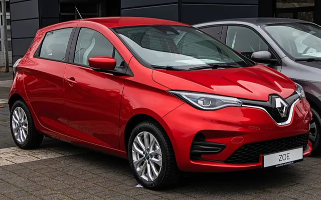

Par Motor › Precios por modelo › Renault Zoe
Precio de segunda mano · noviembre de 2026¿Cuánto vale un Renault Zoe de segunda mano?

Precio justo estimado de un Renault Zoe usado en España, año por año, con los kilómetros normales para su edad y en buen estado: de 6.400 € a 20.700 €. Para tasar el tuyo con sus kilómetros reales y su estado, usa el tasador gratis.
Precios del Renault Zoe por año
Zoe I (2013–2019)
Precio de nuevo: R90 88 CV, 23.000 € · R240 88 CV, 23.000 € · Q90 88 CV, 23.000 €
| Año | Km normales | R90 88 CV · Eléctrico | R240 88 CV · Eléctrico | Q90 88 CV · Eléctrico |
|---|---|---|---|---|
| 2019 | 100.000 km | 8.700 € | 8.700 € | 8.700 € |
| 2018 | 100.000 km | 8.400 € | 8.400 € | 8.400 € |
| 2017 | 100.000 km | 8.000 € | 8.000 € | 8.000 € |
| 2016 | 100.000 km | 7.700 € | 7.700 € | 7.700 € |
| 2015 | 100.000 km | 7.300 € | 7.300 € | 7.300 € |
| 2014 | 100.000 km | 7.000 € | 7.000 € | 7.000 € |
| 2013 | 100.000 km | 6.400 € | 6.400 € | 6.400 € |
Zoe II (2019–2024)
Precio de nuevo: R110 108 CV, 30.000 € · R135 135 CV, 32.000 €
| Año | Km normales | R110 108 CV · Eléctrico | R135 135 CV · Eléctrico |
|---|---|---|---|
| 2024 | 35.000 km | 19.400 € | 20.700 € |
| 2023 | 50.000 km | 17.800 € | 18.900 € |
| 2022 | 65.000 km | 16.300 € | 17.300 € |
| 2021 | 80.000 km | 14.300 € | 15.200 € |
| 2020 | 95.000 km | 12.300 € | 13.100 € |
| 2019 | 100.000 km | 11.300 € | 12.100 € |
Kilómetros normales: 15.000 al año en gasolina, híbridos y eléctricos, y 20.000 en diésel, con un máximo de 100.000 km (por encima no tasamos: el precio depende demasiado del historial de cada coche). Cifras redondeadas a 100 €.
Preguntas frecuentes
¿Cuánto vale un Renault Zoe de segunda mano?
Según el año, la versión y los kilómetros, un Renault Zoe usado vale hoy de 6.400 € a 20.700 € en España. El más barato de nuestra tabla es un R90 de 2013 (6.400 €) y el más caro un R135 de 2024 (20.700 €). Son precios justos estimados entre particulares y profesionales, con los kilómetros normales para su edad y en buen estado.
¿Cuánto valor pierde un Renault Zoe al año?
Con unos años encima, un Renault Zoe pierde alrededor de un 12 % de su valor cada año (calculado sobre el R110 de la generación Zoe II). Los primeros años la caída es mayor y a partir de los 70.000 km se acelera.
¿Qué motorizaciones tiene el Renault Zoe?
En nuestra base de datos hay versiones eléctrico, en 2 generaciónes: Zoe I y Zoe II.
¿Cómo sé si me piden demasiado por un Renault Zoe?
Abre el tasador de Par Motor, elige el Renault Zoe, el año y los kilómetros reales, y escribe lo que te piden. Te diremos si está por debajo del precio justo (chollo) o por encima (caro). Es gratis y no pide registro ni matrícula.
Otros Renault
- Arkana
- Austral
- Captur
- Clio
- Espace
- Fluence
- Kadjar
- Kangoo
- Koleos
- Laguna
- Mégane
- Mégane E-Tech
- Rafale
- Renault 4
- Renault 5
- Scénic
- Symbioz
- Talisman
- Twingo
Compara su coste real
El precio de compra es solo una parte. Mira cuánto te costaría al mes con combustible, seguro, neumáticos, mantenimiento y lo que pierde de valor.
Abrir el comparador →